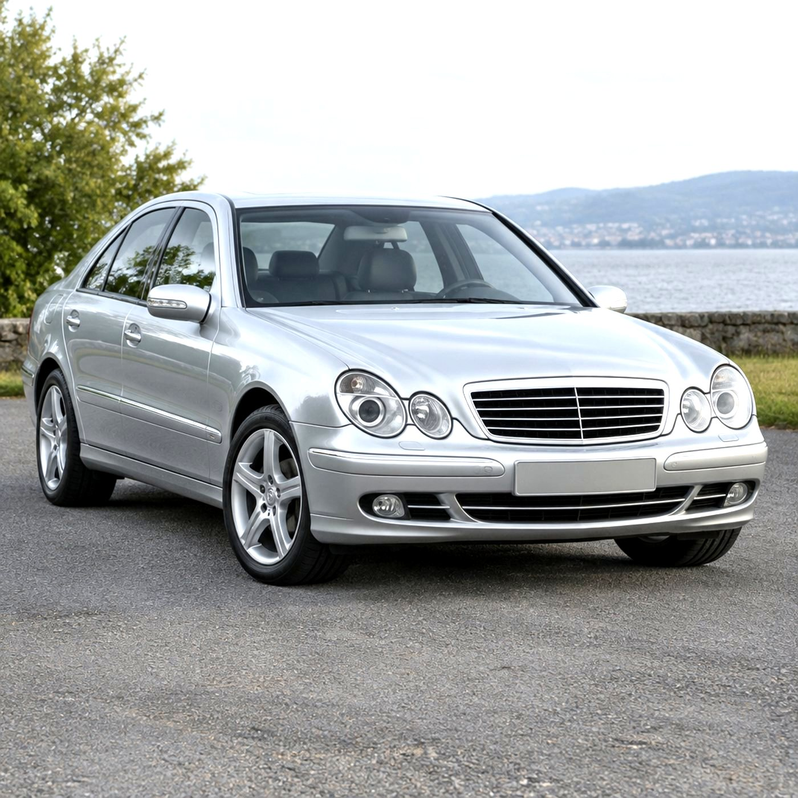

Чтение кодов
Считаю сохранённые и текущие ошибки по двигателю, коробке, тормозам, подвеске, кузовным блокам. Показываю список на экране и на бумаге.

Mercedes-Benz E-Class W211: чтение кодов неисправностей, расшифровка, удаление кодов после устранения причины. По W211 — бесплатно.
Никакой мистики: подключаюсь, читаю, показываю и объясняю. Сброс — только после того, как понятно, откуда код.
Считаю сохранённые и текущие ошибки по двигателю, коробке, тормозам, подвеске, кузовным блокам. Показываю список на экране и на бумаге.
Объясняю, что означает код, из-за чего он появился и что проверять в первую очередь. Без «так надо менять всё».
Стираю коды после устранения причины. Если ошибка возвращается сразу, причина не устранена — это и есть ответ.
Это не диагноз по фотографии. Это честный список того, что смотрю в вашем случае, и какие системы читаю.
У этой машины свои слабые места в электронике. Поэтому читаю те блоки, которые дают ответ.
На машинах до рестайлинга стоит электрогидравлический тормозной блок SBC со своим набором кодов и счётчиками. Читаю отдельно от ABS/ESP.
Передний и задний SAM отвечают за свет, стеклоочистители, часть комфорта. Отказ часто выглядит как «электрика сходит с ума», а код указывает цепь.
Аварийный режим не всегда коробка: часто виноват датчик вращения колеса или ESP. Читаю обе группы и сравниваю.
Пневмоподвеска отдаёт коды по датчикам уровня и клапанам. По параметрам видно, какое колесо проседает.
Всё занимает один визит. Если нужен ремонт — скажу, что делать и к кому ехать.
Пишете в WhatsApp: модель, год, что происходит и что уже делали.
Считываю коды по нужным блокам, смотрю параметры и стоп-кадры.
Показываю список кодов, объясняю приоритет: что критично, что можно наблюдать.
Стираю коды и смотрю, вернулись ли. Пустой список после сброса — не всегда «всё хорошо», объясню почему.
Если вашего вопроса нет — напишите, отвечу текстом.
Чтение и удаление кодов неисправностей по W211 бесплатно. Скажу, что означает код, что проверить и к чему готовиться.